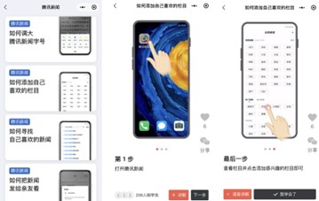

Les innovations de la décennie:
Tencent investit massivement dans les jeux vidéo, le cloud, l’IA et la cybersécurité
-
Tencent games: filière de Tencent fondée en 2003 qui s’occupe des jeux vidéos
-
Iot: Tencent se concentre beaucoup sur l’internet des objets (IoT).
leur service Tencent Cloud Internet of Things Hub fournit plusieurs solutions et produits IoT
de manière efficace et rentable.
-
Intelligence artificielle : Tencent a comme mission celle d'améliorer la qualité de vie. L’intelligence artificielle nous
permet de faire ça en différentes manières. A l’aide des toutes les recherches effectuées et
appliqués le domaine de l’intelligence artificielle progresse faisant en sorte que toutes ces
technologies soient accessibles à tous
-
Quantum Computing: Établi en 2018, Tencent Quantum Lab se focalise sur la recherche scientifique du Quantum computing.
Les produits de Tencent les plus populaires:
.jpg)
Ses activités actuelles:
L'année dernière, Tencent a développé un assistant numérique pour les utilisateurs plus
âgés sur sa populaire application de messagerie et de réseaux sociaux WeChat. Il s'agit
d'un petit programme qui fournit un accès direct aux services quotidiens tels que le paiement
des factures de services publics, l'utilisation des transports en commun, la lecture des
actualités, etc. sur une seule page. Il aide les utilisateurs expérimentés à éviter de télécharger différentes applications.
Vidéos sur la santé créées par l'IA
https://static.www.tencent.com
Depuis 10 ans : chiffre d’affaires multiplié par 34 et bénéfices multipliés par 24.
Strategie actuelle
Tencent et le Green IT
Tencent envisage de privilégier l’utilisation de mesures actives de réduction des émissions
tout en limitant au maximum l'utilisation de compensations carbone. Pour atteindre son
objectif de zéro émission nette, Tencent mettra en œuvre les initiatives clés suivantes :
-
Améliorer l'efficacité des ressources en réduisant la consommation d'énergie par unité
de production dans l'ensemble de ses activités.
-
Augmenter de manière significative la proportion d'utilisation d'énergies
renouvelables, notamment dans la consommation d'électricité. Tencent participera
aussi activement au commerce de l'énergie verte et explorera les investissements
dans des projets d'énergie renouvelable.
-
Adopter des compensations de carbone pour les segments restants
qui ne peuvent pas être réduits autrement.